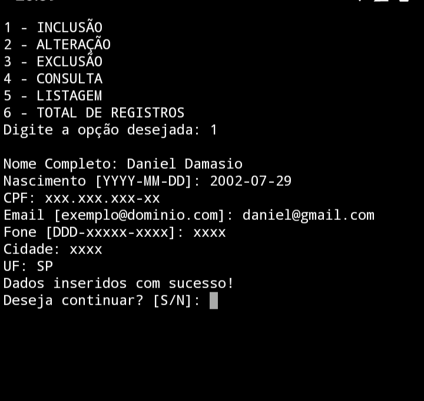

DamakronBlog
Blog desenvolvido a fim de expôr minha criatividade e se possível lhe motivar. Se trata de toda experiência desenvolvida ao longo de meus estudos.
Inteiramente desenvolvido pelo celular, para insentivar entusiastas ou até mesmo demonstrar que nem tudo é impossível se progredir com cadência e foco.
Grandes oportunidades surgirão para aqueles que acreditam em si mesmo e se dedicam por amor. Nunca é tarde demais para dar um passo a frente, muito menos cedo demais.

Projetos Desenvolvidos Pelo Celular
Quando iniciei no Curso Técnico de Desenvolvimento de Sistemas no Centro de Paula Souza, eu era um dos únicos que não havia computador para desenvolver. Logo então, eu só podia praticar durante as aulas no curso.
Eu me deparava com toda essa situação junto com a pandemia do Covid-19, e me perguntei "O que eu realmente quero para minha vida?". Foi aí então que eu me motivei. Busquei conteúdos, procurei dar o meu melhor com o que eu tinha no meu alcance e que poderia me ajudar no meu crescimento profissional.
Mesmo por aulas online, não demorou muito para eu conseguir conquistar o reconhecimento dos meus professores pela minha evolução e pela participação nas aulas.
Infelizmente fomos pegos de surpresa, muitos colegas se distanciaram por causa da rotina, por um ou outro não ter nem mesmo básico ou condições para avançar e seguir em frente. Uma situação complicada que só poderá ser contornada com o tempo.
Quem sou eu?

Olá, me chamo Daniel Damasio e tenho 18 anos. Sou apaixonado por tecnologia desde 2008. Ao decorrer dos anos fui me interessando ainda mais por esse mundo maravilhoso de computadores.
Em 2017 comecei a estudar linguagens de programação como Python, C#, e Delphi. Já tive a Experiência de ter contato com Dart e o Framework Flutter e também Banco de Dados MySQL.
Me encontrei na área Front-end e por isso sigo firme nos estudos em HTML5, CSS3 e JS. A cada dia eu me dedico em evoluir mais para conquistar meu primeiro emprego na área e um dia me tornar ótimo profissional.
Amante da Arte
Uma das coisas que eu adoro fazer é desenhar. É uma ótima maneira de se expressar, se divirtir. Logo a seguir, está alguns dos desenhos que eu já fiz pelo celular no editor de desenhos.
De Tempos
Dan Uchiha
Diu Hatake
Susanoo Well
Python e Linux na Veia
Como o Android tem seu kernel Linux ele até pode ser considerado um mini-computador. Por essas razões, resolvi aprender Python tendo já praticado com aproximadamente 100 exercícios entre, Calculo de IMC, Jokenpô, Adivinhe o número, Calculo de despesas mensais, Mini-Calculadora, entre outros. Fora estes exercícios, separei dois feitos com minha criatividade e base de estudo que eu me orgulho muito.
Mini Nota Fiscal
Mini-Projeto com alinhamentos e dados em lista, após a inserção dos dados a saida é calculada o total e exibida de forma organizada pelo terminal de celular
Cadastro SQLite
Projeto desenvolvido em conjuto do SQLite com um pequeno CRUD(as 4 manipulações de um banco de dados) desenvolvido tambem pelo celular
Contato
Será uma grande jornada pela frente, mas eu sei que um dia irei chegar lá. Pois tudo que você investe o seu tempo para dar o seu melhor e evoluir, irá compensar muito. Mande-me seu feedback! O que achou? Faltou algo? Me conte sua ideia.
Estarei a disposição de quem precisar da minha ajuda ou precisar me contatar. Caso meus conhecimentos atenda a necessidade de alguma empresa, estou disponível para usar toda minha energia e força de vontade.
Onde me encontrar?
Instagram - @damakron
Facebook - Daniel Damasio
LinkedIn - Daniel Damasio
GitHub - damakron